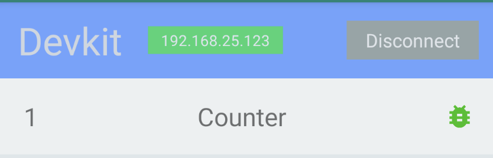

Doric Devkit可以在开发Doric程序过程中,帮助开发者进行日志查看、代码热重载、断点调试等.
本文档介绍如何集成及使用Doric devkit.
Note:本文档需要Doric版本>=0.7.0
Devkit集成
如果您在Doric默认创建的APP工程中运行,可跳过本节内容.
否则,请确认集成Devkit库,并调用其API进行使用.
您可以仅在debug版本中集成Devkit,在release版本中去除依赖.
Android
添加依赖
implementation "pub.doric:devkit:$doricSDKVersion" |
添加入口
import pub.doric.devkit.DoricDev; |
iOS
添加依赖
pod 'DoricDevkit', "#{version}" |
添加入口
|
Devkit使用
在使用Devkit前,请确认
- 电脑中已安装node环境及npm工具.
- 手机中已准备集成了Devkit的APP
- 手机与电脑处于同一局域网,并可相互访问.
准备一个Doric工程,并执行npm install
启动Devkit终端进程
打开终端,进入Doric工程,运行以下命令
doric dev |
终端中会打印出当前电脑的IP地址及对应的二维码
在终端进程运行期间,按住Ctrl + R 可以重新打印出IP及二维码
APP连接
打开Devkit面板(Doric工程中在首页标题栏右侧按钮Devkit)
Devkit面板主要有两个区域,头部区域展示Devkit连接状态,下方列表展示当前运行的Doric程序实例.
未连接状态
您可以点击Input直接输入电脑的IP,或者点击Scan,扫描终端中打印出的二维码.
已连接状态

您可以点击Disconnect断开与电脑的连接.
当手机处于连接状态时,Doric程序中的日志及错误会输出在终端中.
代码热重载
Doric支持代码保存后自动运行的开发模式.
当Devkit处于已连接状态时,首先运行需开发的Doric实例,如上图中的Counter.
然后,修改Doric源码Counter.ts,保存.
如果再次进入调试面板,您可以看到当前实例列表中已重载的实例背景颜色改变.
断点调试
Doric支持断点调试的开发模式.
当Devkit处于已连接状态时,首先运行需开发的Doric实例,如上图中的Counter.
Visual Studio Code
调试配置
在项目.vscode/launch.json中,配置信息如下:
{ |
开始调试
注意事项
请注意,必须要在Panel所在的TypeScript文件中点击
请注意,必须要在Panel所在的TypeScript文件中点击
请注意,必须要在Panel所在的TypeScript文件中点击
按图进入调试
调试中
在调试中进入调试面板,您可以看到当前实例列表中正在调试的实例背景颜色改变.
在手机中退出Doric程序或断开Devkit连接均会停止调试.